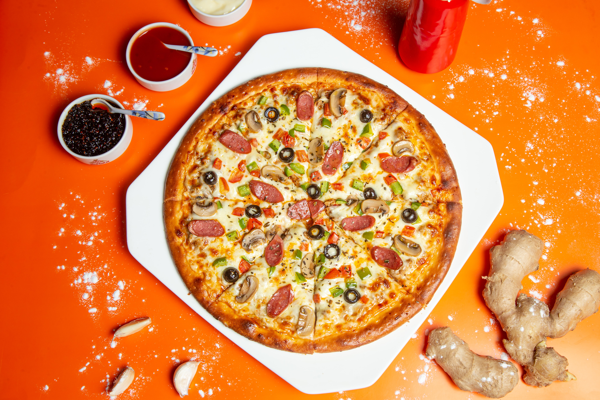

Kgodi's Pizza

You'll hardly find anything more italian than a good old fashioned Pizza
What is Pizza?
a dish of Italian origin, consisting of a
flat round base of dough baked with a topping
of tomatoes and cheese, typically with added
meat, fish, or vegetables.
Ingredients
- 2 tablespoons olive oil
- ¼ cup yellow cornmeal
- 1 pound pizza dough, homemade or store-bought
- ½ cup plus 2 tablespoons favorite bbq sauce, we love Stubb’s
- 2 cups leftover shredded rotisserie chicken
- 1 cup shredded smoked cheddar cheese
- 1 cup shredded whole milk mozzarella cheese
- ½ cup diced red onion
- Kosher salt and freshly ground pepper, to taste
- 3 tablespoons chopped fresh cilantro leaves
Instructions
- Preheat oven to 450 degrees F.
Lightly coat a baking sheet or
pizza pan with olive oil.
- Working on a surface that has
been sprinkled with cornmeal,
roll out the pizza into a 12-inch-diameter
round. Transfer to prepared baking
sheet or pizza pan.
- Using a small ladle, spread bbq
sauce over the surface of the dough
in an even layer, leaving a 1/2-inch border.
- Top with chicken, cheeses and onion; season
with salt and pepper, to taste.
- Place into oven and bake for 20-24
minutes, or until the crust is golden
brown and the cheeses have melted.
- Serve immediately, garnished with cilantro,
if desired.